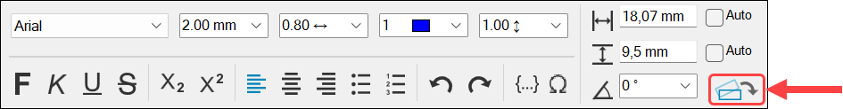
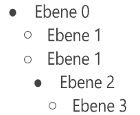
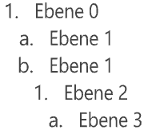
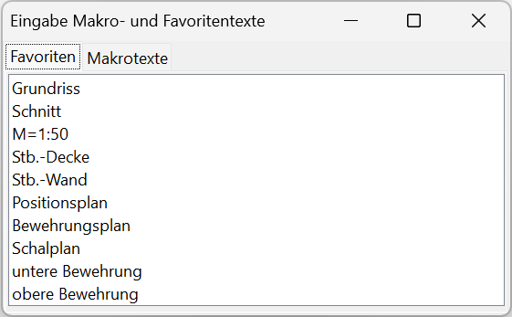
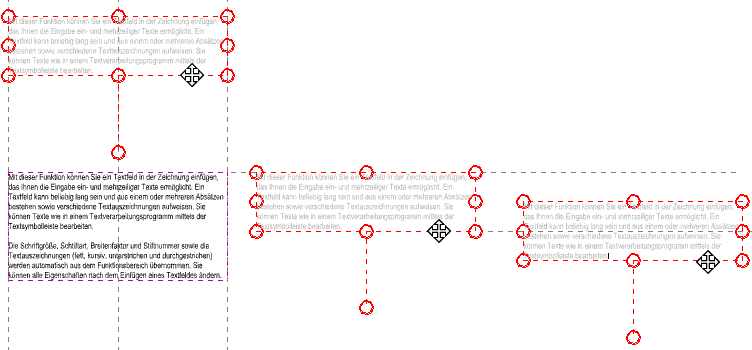
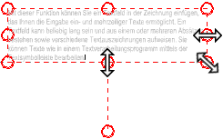
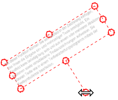
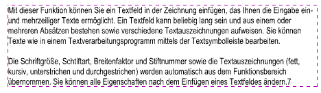

")
")
Mit dieser Funktion fügen Sie ein Textfeld in die Zeichnung ein, in das Sie ein- oder mehrzeilige Texte schreiben können. Ein Textfeld kann beliebig lang sein, mehrere Absätze enthalten und verschiedene Textauszeichnungen verwenden. Sie können Texte wie in einem Textverarbeitungsprogramm mittels der Textbearbeitungsleiste bearbeiten.
·Die Schriftgröße, Schriftart, Breitenfaktor und Stiftnummer sowie die Textauszeichnungen (fett, kursiv, unterstrichen und durchgestrichen) werden als Voreinstellungen automatisch aus dem Funktionsbereich übernommen. Sie können vorab mit der sowie-Funktion die Eigenschaften eines Textes übernehmen. Alle Eigenschaften können nach dem Einfügen eines Textfeldes geändert werden. Wenn ein Textfeld später mit der Funktion [Konst 1 | Texte | ändern] bearbeitet wird, bleiben die ursprünglich getroffenen Einstellungen erhalten.
·Die Auswahl verfügbarer Schriftarten kann in den Systemdaten konfiguriert werden:
[Option | Sysdat → Fontauswahl].
Anmerkung: Blocktexte, die mit früheren ISBCAD Versionen erstellt worden sind, werden nach dem Anklicken mit der Ändern-Funktion [Konst 1 | Texte | ändern] oder bei einer Maßstabskorrektur [Konst 2 | MaßKor] automatisch in die neuen Textfelder konvertiert.
§Klicken Sie auf der Zeichenfläche den ersten Diagonalpunkt und anschließend den zweiten Punkt an, um die Breite und Höhe des Textfeldes zu bestimmen. Sie können auch Punkte fangen. [1. Punkt]; [2. Punkt].
Winkel: Soll das Textfeld in einem bestimmten Winkel eingefügt werden, klicken Sie auf Winkel und geben Sie den gewünschten Wert ein oder wählen Sie eine Winkelvorgabe. Mit P... und O... richten Sie die Grundlinie des Textfeldes parallel oder orthogonal zu einem Bezugselement aus.
Nach der Erstellung erscheint das Textfeld im gewählten Winkel. Sofern es gedreht eingefügt wurde, können Sie es zur besseren Textbearbeitung horizontal am Bildschirm ausrichten, indem Sie die Funktion Textfeld horizontal ausrichten in der Textbearbeitungsleiste aktivieren. Die Zeichenfläche wird dabei vorübergehend gedreht. Sie können die Funktion bei jeder Winkelanpassung des Textfeldes aktivieren oder deaktivieren.
Textbearbeitungsleiste:  |
Tipp: Das horizontale Ausrichten kann als Standardverhalten festgelegt werden; [Option | Einste | Textfeld horizontal ausrichten].
Text einfügen
§Führen Sie einen der folgenden Schritte aus:
a)Eingeben: Geben Sie den Text innerhalb des gestrichelten Rahmens ein.
b)Kopieren und Einfügen: Verwenden Sie Strg+C, um Text aus einer externen Quelle zu kopieren und Strg+V, um den Text in das Textfeld einzufügen.
Sie finden die Befehle Kopieren, Einfügen, Ausschneiden und Löschen im Kontextmenü, das Sie mit einem Rechtsklick öffnen.
c)Text-Zwischenablage: Bevor Sie ein Textfeld erstellen oder es über die Funktion [Texte | ändern] bearbeiten, können Sie die Funktion [Texte | ZwiAbl] verwenden. Damit können Sie Texte aus einer geöffneten ISBCAD Zeichnung in die Zwischenablage legen. Drücken Sie anschließend im Textfeld Strg+V, um den Text an der Cursorposition einzufügen, oder Windows-Taste+V, um ihn über den Windows-Zwischenablageverlauf einzufügen. Siehe auch: Texte in die Zwischenablage kopieren und einfügen
Anmerkung: Wenn Texte aus anderen Programmen (z. B. Word) oder über die Zwischenablage [Texte | ZwiAbl] in ein Textfeld kopiert werden, werden sie gemäß den Einstellungen in der Textbearbeitungsleiste eingefügt.
Texte zum Formatieren und Bearbeiten auswählen
§Positionieren Sie die Einfügemarke am oder im Text und führen Sie einen der folgenden Schritte aus:
a)Wählen Sie durch Anklicken und Ziehen ein oder mehrere Zeichen aus.
b)Doppelklicken Sie auf ein Wort, um es auszuwählen. Klicken Sie drei Mal auf ein Wort, um die gesamte Zeile auszuwählen.
c)Drücken Sie Strg+A, um den gesamten Text auszuwählen.
Text formatieren und bearbeiten
Mit der Textbearbeitungsleiste können Sie ausgewählte Texte formatieren, Makro- und Favoritentexte einfügen und die Größe des Texfeldes an den Textinhalt anpassen.
Wählen Sie die Zeichen, Texte und Textabschnitte aus, die Sie formatieren möchten.
Funktionen in der Textbearbeitungsleiste
|
 |
 |
Aufzählungszeichen |
Nummerierung |
12. Zurück
Setzt schrittweise die vorher abgeschlossenen Aktionen zurück (beginnend mit der zuletzt abgeschlossenen Aktion).
Nutzen Sie alternativ die Tastenkombination Strg+Z.
13. Wiederherstellen
Stellt schrittweise die letzten Zurück- (Korrektur) Aktionen wieder her.
14. Einfügen von Favoritentexten und Makrotexten
Fügen Sie Favoritentexte und Makrotexte aus der Auswahlliste ein, indem Sie die entsprechende Registerkarte öffnen und den Text anklicken. Der Text wird an die Position der Einfügemarke gesetzt.
-Bei dynamischen Makrotexten haben Sie die Möglichkeit, die Formatierung anzupassen. Bearbeiten Sie dazu die Zeichenfolge nach dem $-Zeichen. Siehe: Dynamische Makrotexte (Referenz).
-Der Dialog bleibt solange geöffnet, bis Sie ihn schließen. Sie können die Einfügemarke daher jederzeit an eine andere Position setzen, um weitere Favoriten- und Makrotexte einzufügen.
-Wenn ein Makrotext im Textfeld angeklickt wird, dann wird er hervorgehoben.
 |
15. Einfügen von Sonderzeichen
Öffnet den Dialog Eingabe Sonderzeichen. Je nach Schriftart des zu bearbeitenden Textes, werden die verfügbaren Sonderzeichen geladen.
Klicken Sie Sonderzeichen an, um diese an der Position der Einfügemarke einzufügen. Der Dialog bleibt solange geöffnet, bis Sie ihn schließen. Sie können die Einfügemarke daher jederzeit an eine andere Position setzen, um weitere Sonderzeichen einzufügen.
16. Winkel
Geben Sie einen Drehwinkel ein oder wählen Sie eine Vorgabe aus der Auswahlliste, um das Textfeld gedreht auf der Zeichenfläche zu platzieren.
Mit P... und O... richten Sie die Grundlinie des Textfeldes parallel oder orthogonal zu einem Bezugselement aus.
17. Ausrichten des Textfeldes
Richtet das Textfeld horizontal am Bildschirm aus, sofern es gedreht ist.
Sie können das Textfeld während der Bearbeitung an eine andere Stelle verschieben.
§Bewegen Sie den Cursor über eine gestrichelte Rahmenlinie. Wenn sich der Cursor ändert, halten Sie die Maustaste gedrückt, und ziehen Sie den Rahmen an eine andere Stelle. Wenn die Position erreicht ist, lassen Sie die Maustaste los.
Orthogonalmodus: Sind bereits Textfelder auf der Zeichnung vorhanden, können Sie den zu verschiebenden Rahmen bei gedrückter Umschalttaste (Shift) an den eingeblendeten Hilfslinien einrasten lassen. Die Textfelder müssen hierfür im selben Winkel erstellt worden sein. Sie können den Rahmen an die obere, mittlere und untere Grundlinie sowie an die seitlichen Rahmenlinien des Textfeldes verschieben, auf das Bezug genommen wird.
 |
In [Konst 1 | Texte | ändern]: Beim Verschieben und Verändern der Größe wird die Position des anfänglich erstellten Rahmens dargestellt. Sie können diese Rahmenlinien oder die anderer Textfelder als Bezugselemente nutzen. |
Sie können die Größe des Textfelds während der Bearbeitung oder nachträglich mit der Textfunktion ändern anpassen.
§Bewegen Sie den Cursor über einen Griffpunkt. Wenn sich der Cursor ändert, halten Sie die Maustaste gedrückt, und ziehen Sie den Punkt in die gewünschte Richtung. Wenn die Größe passt, lassen Sie die Maustaste los.
 |
Sie können das Textfeld frei oder in 45º-Schritten um dessen Zentrum drehen. Alternativ können Sie einen Drehwinkel in der Textsymbolleiste im Feld Winkel eingeben.
§Bewegen Sie den Cursor über den unteren Griffpunkt. Wenn sich der Cursor ändert, halten Sie die Maustaste gedrückt, und ziehen Sie den Punkt nach links oder rechts. Wenn der Drehwinkel erreicht ist, lassen Sie die Maustaste los.
Um das Textfeld in 45º-Schritten zu drehen, halten Sie die Umschalttaste (Shift) gedrückt, und ziehen Sie den Punkt nach links oder rechts. Lassen Sie die Taste und anschließend die Maustaste los, wenn der Drehwinkel erreicht ist.
 |
Bearbeitung abschließen
Um die Bearbeitung abzuschließen, klicken Sie mit der rechten Maustaste in einen freien Bereich außerhalb des Textfeldes. Das Textfeld wird auf der Zeichnung mit einem gestrichelten Rahmen dargestellt. Dieser Rahmen ist immer dann sichtbar, wenn Sie eine Funktion aufrufen, mit der auch Texte bearbeitet werden können wie z. B. Drehen, Verschieben oder Kopieren. Das hilft Ihnen bei der Selektion und Bearbeitung der entsprechenden Textfelder.
 |
Siehe auch:
·Farbeinstellungen für die Rahmenlinien
Zugehörige Referenzen: